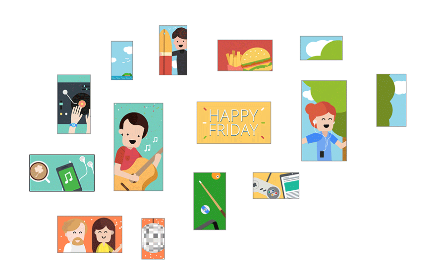
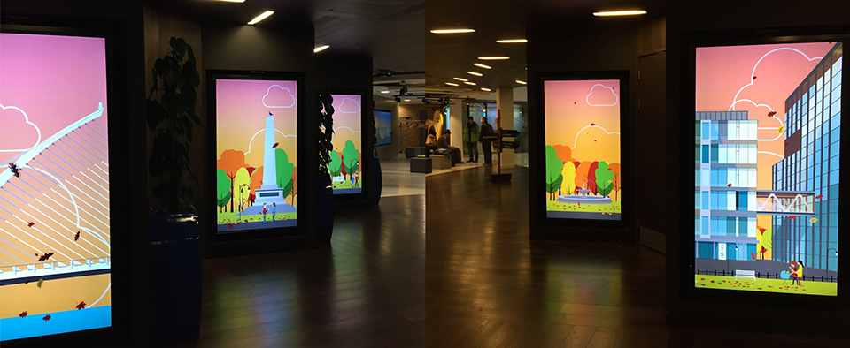
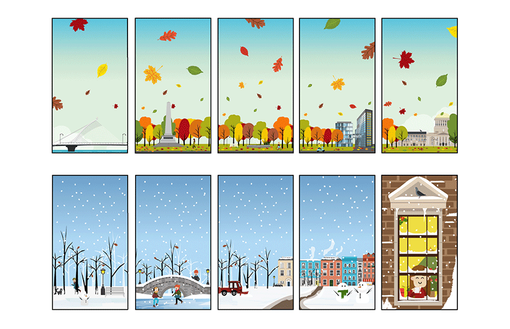

The Welcome Gallery

Illustration

Welcome Corridor

Illustration

The Foundry event space in Google Dublin is truly an amazing venue. Google Dublin’s incredible event space is a playground of technology, frequently hosting the industry’s finest brands and innovators. Despite housing incredible technology, the assets available to display during events had so far been limited.
I worked on an animated Dublin skyline that shows the transition of the city and landmarks from sunrise to sunset. The biggest screen in The Foundry would work like a window over a illustration of Dublin. Elements/versions of the illustration could be provided for night, day, rain, sunshine etc.
Google products would also be integrated into the city scape.The Dublin skyline cityscape will feature moving clouds, driving cars, flowing water and a sun that sets with changing colours in the sky.
Hi, I’m Lydia Bae. I’m a freelance digital designer based in London who enjoys creating innovative websites and applications.
I am an award-winning designer who is passionate about creating meaningful and beautiful web experiences. I design digital solutions that tell a story, solve a need, educate, activate, and inspire. My intent with my designs is to take care of the user journey, help users achieve their goals, and ultimately drive business success. I specialise in art direction/interface design/user experience and have worked alongside a number of international clients. If you would like to work with me in the future, feel free to send me an email or download my cv.